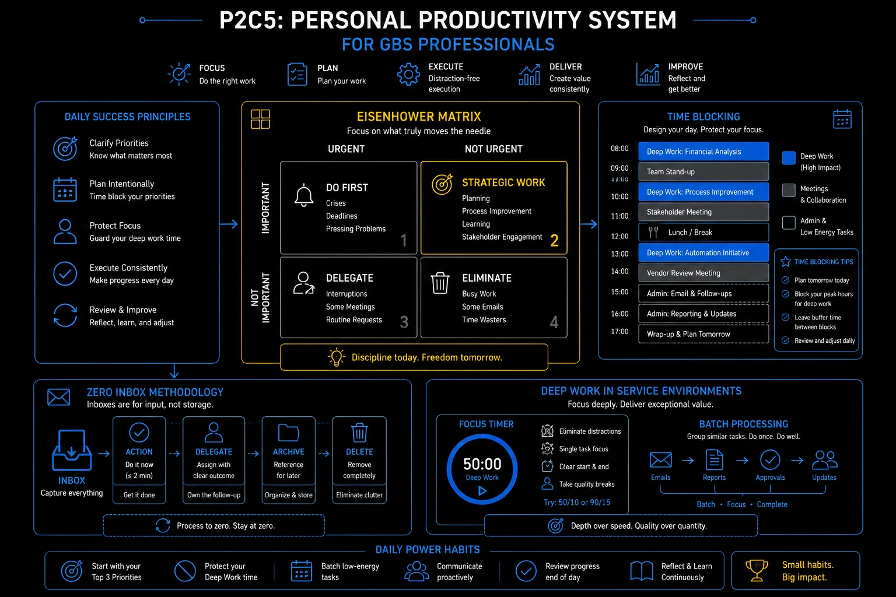

Personal Productivity Being busy is not the same as being effective. GBS rewards the second.
GBS is a high-volume, high-interruption environment. Deadlines are daily. Queries arrive constantly. Urgent always seems to win over important. The professionals who advance are the ones who learn to manage their own capacity as deliberately as they manage the team's.
Sound familiar?
The Eisenhower Matrix — stop being busy, start being effective
Four quadrants sort every task by urgent and important. The quadrant decides the action: do, schedule, delegate, drop. The model is in THE FIX.
Busy all day.
Nothing important moved.
 R
R6 PM. Ravi’s task list is longer than it was at 9 AM.
He answered every ping, joined every call, cleared every "quick question."
The month-end prep he planned? Untouched.
"What did today actually produce?"
He feels spent — with nothing to show for it.
Urgent tasks come to you on their own — emails, calls, escalations. Important tasks, like improving a process or updating your career plan, will not come to you. You have to schedule them deliberately, or they never happen.
Every task lands in one of four quadrants — and the quadrant decides the move.
Ravi books his Q2 work like meetings. The pings still come — they just stop running the day.
The Eisenhower Matrix in depth — with GBS examples
Named after US President Dwight D. Eisenhower: "What is important is seldom urgent and what is urgent is seldom important." Four quadrants. Every task you have belongs in one of them.
The quadrant of growth
Planning, learning, process improvement, relationship building, preventive maintenance. The work that prevents future crises. Neglecting Q2 guarantees you spend more time in Q1.
The crisis quadrant
SLA breach in progress, system failure affecting processing, month-end close risk, compliance deadline. Genuine crises. The goal is to minimize time here — most Q1 situations are created by neglecting Q2.
The interruption quadrant
Most emails, many meetings, ad hoc requests that feel urgent because someone is waiting but do not actually move your priorities forward. The biggest productivity trap in GBS. Busy people live here.
The elimination quadrant
Reports nobody reads, meetings with no agenda, activities that consume time without producing value. In GBS terms: this is waste — motion and extra-processing applied to your own time.
Eisenhower matrix — urgent vs important
Sort today’s list into the four quadrants. Book one Q2 block before noon tomorrow.
Q2 needs protected time. Here is how to defend it.

Personal productivity system for GBS professionals: Eisenhower matrix, time blocking, zero inbox, and deep work
Time blocking and deep work in a service environment
Deep work does not survive an open calendar. Time blocking gives focus its own protected slots. The model is in THE FIX.
An open calendar
is an open invitation.
 K
KKlaudia’s best analysis happens in the last week — always in a panic.
The reason is visible: her calendar. Anyone books anything, anytime.
She blocks 8 to 10 daily. Colleagues test it. She holds it.
"You are never free in the mornings anymore?" — "Correct."
She feels resolute.
You wait for free time to focus. Free time is what others have not taken yet.
Focus is scheduled, not found. Three habits carry it.
The panicked last week disappears. The analysis gets done early — inside two protected hours a day.
Time blocking and deep work in depth
Deep work — concentrated, uninterrupted focus on cognitively demanding tasks — is nearly impossible in a standard GBS open-plan, notification-heavy environment. Unless you design for it deliberately.
- Assign specific time to specific work: instead of a to-do list that you work through reactively, block calendar time for your most important tasks. Treat those blocks like meetings you cannot cancel.
- The focus block (90–120 min): close email, silence notifications, work on one complex task. Research consistently shows that 90 minutes of focused work produces more than 3 hours of fragmented work on the same task.
- The admin block: batch all email responses, queries, and reactive tasks into a defined window. Checking email 3 times per day is more productive than checking it every 10 minutes.
- Month-end time blocking: GBS has predictable peaks. Block the last 3 business days of every month as "processing only" — no new projects, no non-urgent meetings, full focus on close-critical tasks.
- Buffer time is not wasted time: leave 20–30% of your calendar unblocked. Unexpected things will happen. If you have no buffer, every interruption pushes something else into overtime.
Illustrative — adapt to your GBS role and team norms. The principle: protect focus time by design, not by hoping for it.
GBS is a service environment. Your colleagues and stakeholders expect responsiveness. You cannot ignore a payment escalation because you are in a focus block. The resolution:
- Communicate your focus blocks to your team lead.
- Ensure cover is in place for urgent issues.
- Treat the blocks as protected, not absolute.
A 90-minute focus block with a cover arrangement is sustainable. A 90-minute block with no cover causes real operational problems.
Time blocking — protecting deep work in a service environment
Block two morning hours for your hardest work this week. Decline the first meeting that lands on it.
The biggest block-breaker has its own topic. The inbox.
Email management — taming the most common productivity drain in GBS
80–120 daily emails will set your agenda unless you batch, triage, and separate intake from task list. The model is in THE FIX.
Your inbox is a to-do list
written by other people.
 A
A8:30 AM. Forty unread.
Amara answers newest first. By 11, twenty new arrivals have replaced them.
Her own priority — untouched since Tuesday.
"I work all day inside the inbox and finish nothing of mine."
She feels hijacked.
Real-time email means everyone else’s priorities run your day in arrival order.
The inbox is intake — treat it like one.
Three windows, ruthless triage. The inbox empties three times a day — and her own priority moves first.
Email management in depth — the full system
The average GBS professional receives 80–120 emails per day. Without a system, email becomes the primary driver of your agenda. You respond to everyone else's priorities rather than managing your own.
Batch email to defined windows — not real-time
Check and respond to email 3 times per day: morning, midday, end of day.
- Disable notifications outside those windows.
- Most "urgent" emails are not actually urgent — the 2 hours you save from reactive checking goes directly into productive work.
- Exception: a real-time escalation channel (Teams, phone) stays live for genuine urgency.
The two-minute rule — act or archive immediately
If an email takes less than 2 minutes to handle: handle it immediately when you process it.
- If it takes more than 2 minutes: move it to a task system or calendar.
- An inbox is not a to-do list — emails that sit unprocessed create cognitive load every time you see them.
The 4D email framework — decide on first read
- Delete it — FYI, no action required.
- Do it — under 2 minutes.
- Delegate it — not yours to own.
- Defer it — requires time, schedule it.
The goal: every email is processed once, not re-read three times before being actioned.
Inbox zero — the destination, not the method
Inbox zero does not mean responding to everything instantly. It means your inbox contains only items awaiting action — everything else is filed or deleted.
- Psychological benefit: a clear inbox reduces the ambient anxiety of an overflowing queue.
- Practical benefit: you always know what is actually outstanding.
- Being responsive is not the same as being reactive. The most productive GBS professionals respond quickly to things that matter — and ignore or batch the things that don't. The key skill is telling the difference. Your inbox cannot make that distinction for you.
- Q2 work is where career growth happens. Every time you skip the DTP update, the process improvement idea, the training session, or the mentor meeting because something "urgent" appeared — you are trading your future for someone else's present. Protect Q2 aggressively. It does not protect itself.
- Productivity systems only work if they cost less time than they save. The Eisenhower Matrix, time blocking, and inbox zero are frameworks — not religion. Take what works for your role and your team, leave what does not, and resist the temptation to spend more time managing your productivity system than actually being productive.
Zero inbox — process, delegate, schedule, archive
Turn off email notifications and set three check windows. Hold it for five workdays.
Your day is yours again. Spend part of it on the skills that decide your next move.
Key terms in this cluster
Full glossary at the GBS Insider Club Field Guide.
- Metaintro — 18 Time Management Techniques That Actually Work
- ThriveSprarow — Master Productivity with the Eisenhower Matrix
- Bitrix24 — Time Blocking in 2026: Advanced Techniques for Deep Work
- Medium (Dr Tiat Leong Ang) — Mastering Time Management: Pomodoro, Eisenhower Matrix, and Time Blocking
- Newport, C. — Deep Work: Rules for Focused Success in a Distracted World (2016)
- Allen, D. — Getting Things Done: The Art of Stress-Free Productivity (2001, rev. 2015)
You have covered all five clusters of Pillar 2 — Operational Excellence. The frameworks, methodologies, and habits in this pillar are the operating system of every high-performing GBS professional.
- ✓ C1 — Process and Knowledge Management
- ✓ C2 — Service Management
- ✓ C3 — Continuous Improvement
- ✓ C4 — Operational Controls
- ✓ C5 — Personal Productivity — this page
Want the full breakdown on video?
Personal productivity for GBS professionals covered in depth on the GBS Insider Club YouTube channel.
▶ Subscribe on YouTubeKnowing the frameworks is the entry ticket. Applying them — visibly, at your actual job — is what gets you promoted.
The GBS Insider Club Career Playbooks turn this theory into a guided 90-day program for your role: self-assessment, practical exercises, templates, and Julian's unfiltered practitioner playbook.
Explore the Career Playbooks → Back to Operational Excellence